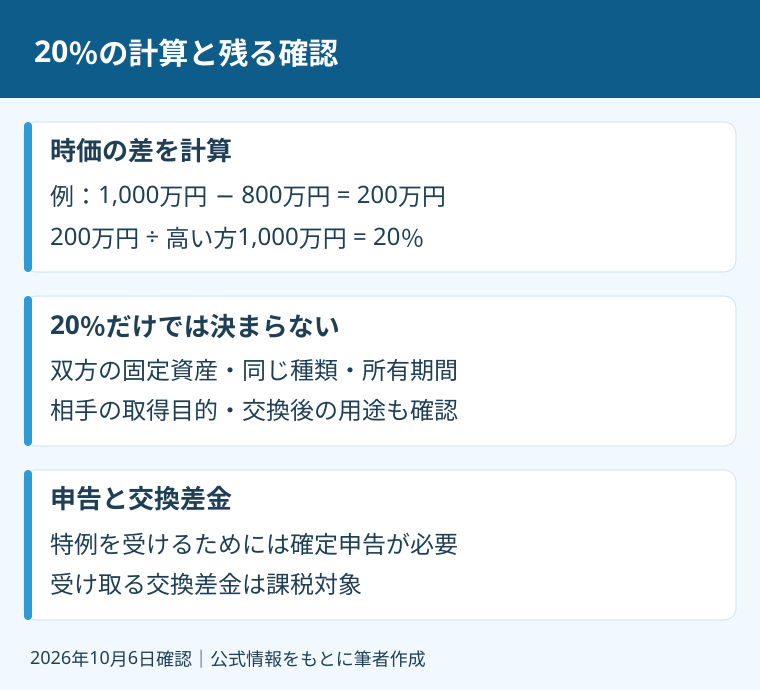

隣の土地と一部を交換し、使いやすい敷地にしたい。売買代金のやり取りが小さい話ほど、税金の確認が後回しになりがちです。けれども、土地の交換は「お金を動かさないから課税もない」と決められる取引ではありません。
私、大石浩之（磐田市／不動産業）は、宅地建物取引士として敷地の条件と取引の段取りを整理します。税の特例の適用可否は、私の資格で断定しません。国税庁の2026年4月1日現在の案内を、2026年10月6日に確認しました。
土地月間は、交換特例の改正を意味しない
国土交通省は毎年10月を「土地月間」、10月1日を「土地の日」と定めています。2026年のポスターと作品コンテスト受賞作品も掲載しています。土地の利用や管理を考える季節の入口です。
本記事が10月に交換を取り上げるのは、この季節の呼びかけに合わせたものです。2026年10月に交換特例が新設・改正されたという意味ではありません。特例の条件は、国税庁No.3502「土地建物の交換をしたときの特例」で確認します。
固定資産の交換は、六つの要件を照合する
国税庁No.3502は、個人が土地や建物などの固定資産を同じ種類の固定資産と交換した場合に、譲渡がなかったものとする特例を案内しています。「固定資産の交換の特例」という制度です。どんな交換にも使えるわけではありません。
固定資産とは、この案内では販売用の棚卸資産と区別される土地や建物などです。不動産業者が販売のために保有する土地などの棚卸資産は対象になりません。隣の持ち主が個人か会社かを聞くだけでは、資産の性質は決められません。
- 譲渡する資産も取得する資産も、固定資産であること。
- 土地と土地、建物と建物のように、同じ種類の資産であること。
- 自分が譲渡する資産を、1年以上所有していること。
- 取得する資産を相手も1年以上所有し、交換のために取得したものではないこと。
- 取得する資産を、自分が譲渡する資産の交換直前と同じ用途で使用すること。
- 双方の時価差が、高い方の価額の20％以内であること。
国税庁は土地の用途を、宅地、田畑、鉱泉地、池沼、山林、牧場または原野、その他と区分しています。土地同士という種類の条件と、使い道という用途の条件は別です。「地目が同じ」とだけ聞いて結論を出さず、実際の用途の整理を専門家へ依頼します。
私は、敷地の形を整える相談では交換と買い増しを分けて案内します。代金を払って取得するなら、隣地買い増しの価格と交渉の考え方が入口です。売買を交換という名前へ変えれば特例を使える、という考え方は取りません。

20％の分母は、価額が高い方の土地
固定資産の交換の特例における時価差の割合は、双方の時価のうち高い方の価額を分母にします。面積の差を20％以内にする計算ではありません。時価とは、その資産の交換時点の価値を判断するための価額です。
仮に、交換する部分の時価が1,000万円と800万円なら、差は200万円です。200万円を高い方の1,000万円で割ると20％になります。低い方の800万円で割った25％を、この要件の判定に使うことはしません。数字は制度を理解するための仮定例です。
もう一つの仮定例として、1,000万円と790万円なら差は210万円です。210万円÷1,000万円は21％で、20％以内の要件を満たしません。実際の土地の価額を示す例でも、磐田市の相場でもありません。計算の分母と境目だけを確認する例です。
私の商売の感覚では、20％という割合を、持ち主が用意する現金へ戻して考えます。差金、測量、登記、申告などにどれだけ資金を置くかは別の確認です。20％以内に収まっても、手元資金がほぼ要らない取引とは限りません。費用は見積りで積み上げます。
私は、隣同士で納得した価額なら税務上も確実、と言い切ることに迷いがあります。合意の値段と、特例の判定に用いる時価の妥当性を同じものにしたくありません。どの資料を根拠に判断するかを、契約前に税理士と共有します。
交換差金の課税と確定申告は残る
国税庁No.3502は、特例を受けるために一定の書類を添えた確定申告が必要としています。提出書類として、譲渡所得の内訳書の土地・建物用を案内しています。条件を満たせば、何もしなくてよい制度ではありません。
同じ国税庁の案内は、相手から金銭などの交換差金を受け取った場合、その差金は譲渡所得として所得税の課税対象になるとしています。特例が使える土地の交換でも、受け取る差金まで一律に非課税となるわけではありません。
この差金の扱いは、意外に感じる方がいると思います。例えば、差金を受け取る側の資金計画なら、受領額をそのまま自由に使える予算とはしません。ただし、差金の金額そのものが税額ではありません。具体的な計算や取得費の扱いは、税理士に確認を。
本記事は所得税の交換特例に絞っています。登記の費用や別の税目まで、この特例で免除されると説明することはできません。税務相談と登記の見積りを分け、取引全体の支出を確認してください。
良い点は敷地の整理、注文は合意前の資料
私が考える土地交換の良い点は、双方が欲しい部分を調整し、敷地の使い方を組み直せることです。敷地を使う目的と資金の条件を一緒に検討できる点を評価します。
私は、相手の土地を丸ごと買う案だけでなく、必要な部分を交換する案を比較できる点を評価します。買い増しより使いやすくなるとは限りませんが、駐車、出入り、建物の配置などを図面で話せます。互いの目的を先に確認できれば、価格だけの交渉を避けられます。
その上で注文したいのは、交換の約束より先に資料をそろえることです。渡す部分と受け取る部分の範囲、所有期間、用途、時価の根拠を曖昧にしたまま話を進めたくありません。私は、20％だけで交換を決めない、と言い切ります。
一部を区切る作業が必要なら、土地の分筆と売却の段取りも確認します。分筆は、一つの土地の登記を分ける手続きです。分筆できることと、交換特例を使えることは別の判断になります。
私なら、契約前に六つの空欄を残す
土地交換を検討する今日の一歩は、双方の土地について、範囲、名義、取得時期、用途、時価の根拠、差金の予定を控えることです。分からない欄は空欄にします。空欄を埋める担当を決めてから、契約条件を詰めるのが私の提案です。
私はこう考えます。隣の持ち主と図面を囲む場面なら、話しやすい面積の数字だけを先に書きません。「交換する部分はここか」「いつ取得したか」という確認欄を並べます。これは実際の相談の再現ではなく、私の案内方針です。互いに納得した後で税の条件が違ったと分かるより、未確認を見える形で残し、次の相談先を決めるほうが家計を守れると考えます。
名義と取得時期を調べる入口は、登記事項証明書の取得方法です。登記の記録だけで税務上の所有期間や用途の判定が完了するわけではありません。取得時の契約書など、追加資料の要否も専門家へ聞きます。
今日、隣との交換を決める必要はありません。条件を確認してから、売買案や当面変更しない案も比べられます。家族が困らない取引のため、私は範囲と資金の整理から案内します。税務・登記・境界の個別判断は、税理士・司法書士・土地家屋調査士などの専門家に確認を。